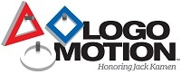
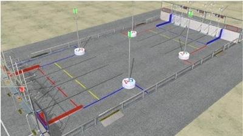
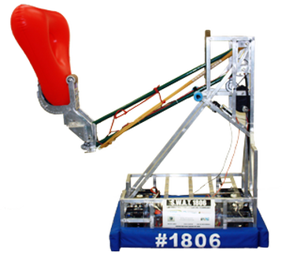

2011: Logo Motion

Game Description:
LOGO MOTION™ is played by two competing alliances on a flat 27 x 54 foot field. Each alliance consists of three robots. They compete to hang as many inflated plastic shapes (triangles, circles, and squares) on their grids as they can during a 2 minute and 15 second match. The higher the teams hang their game pieces on their scoring grid, the more points their alliance receives. The match begins with one 15-second Autonomous Period in which robots operate independently of driver inputs and must hang Ubertubes to score extra points. For the rest of the match, drivers control robots and try to maximize their alliance score by hanging as many logo pieces as possible. Any logo piece hung on the same peg as an Ubertube receives double points. If teams assemble the logo pieces on their scoring grids to form the FIRST® logo (triangle, circle, square, in a horizontal row in that order), the points for the entire row are doubled. The match ends with robots deploying minibots, small electro-mechanical assemblies that are independent of the host.
Description of Robot:
The 2011 S.W.A.T. robot uses an advanced drive system called crab drive allowing the robot omnidirectional movement. Crab drive uses rotating wheel modules to move forward, backward, left, left, and any angle in-between. Magnetic encoders allows on the arm allows the robot to place tubes on the rack autonomously during the first 15 seconds of the game. The main robot deploys a mini-bot to climb a 10 foot high tower to score bonus points in the last 10 seconds of the game.
